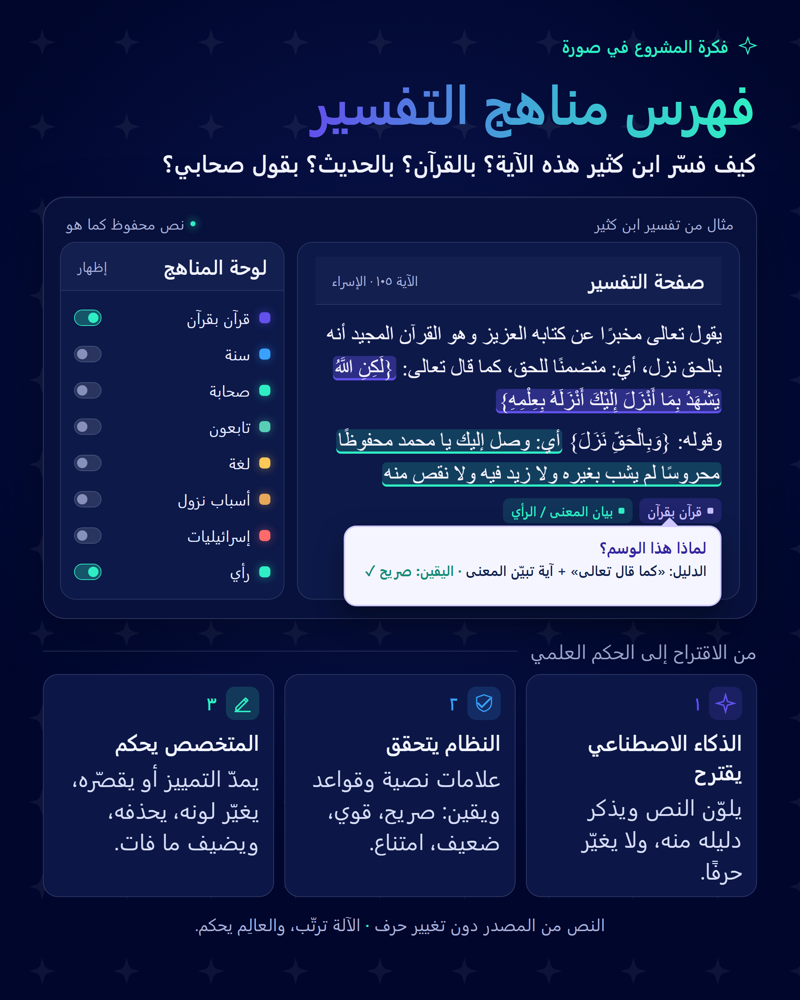

كيف فسّر ابن كثير هذه الآية؟ بالقرآن؟ بالحديث؟ بقول صحابي؟ — أداة تجيب عن هذا السؤال من نص التفسير نفسه، بالدليل.

صفحة تفسير ابن كثير بجانب لوحة المناهج؛ اختيار منهج يلوّن مواضعه في النص.
الذكاء الاصطناعي يقترح، والمتخصص يحكم، والنص لا يتغيّر.
الباحث لا يستطيع أن يسأل: «أين استدل ابن كثير بالحديث في هذه الآية؟» إلا بقراءة الصفحات كلها.
وإجابات الذكاء الاصطناعي عن القرآن لا يمكن تتبّع مصدرها.
معيار نجاح المسار نفسه:
«أظهر المصدر وحالة الدليل بصورة واضحة وقابلة للتتبع، وميّز بين ما تؤيده المصادر وما يتطلب مزيداً من التحقق»
مصدر واحد: تفسير ابن كثير من البيانات المفتوحة لمركز تفسير (CC BY 4.0).
المناهج العشرة:
يرتّب ولا يكتب: يُرجع أرقام أجزاء قطّعها البرنامج، لا نصاً، فلا يستطيع تغيير حرف.
يحكم على «وظيفة» الموضع لا على كلماته: الآية داخل حديث ليست «قرآناً بقرآن»، والصحابي في الإسناد ليس «قول صحابي».
ثلاث طبقات أدلة:
«أصح الطرق أن يُفسَّر القرآن بالقرآن… فإن أعياك ذلك فعليك بالسنة… ثم أقوال الصحابة… ثم التابعين»
| درجة اليقين | الملاحظة |
|---|---|
| صريح | |
| مستنتج بقوة | |
| مستنتج بضعف | يذهب للمتخصص |
| امتناع | لا يصنّف |
درجة الثقة محسوبة لا يقرّرها النموذج عن نفسه: علامة ٢٥ + دليل الوظيفة ٤٥ + وضوح النسبة ١٥ + اكتمال الحدود ١٥، ولا تتجاوز ٥٩ إن غاب دليل الوظيفة.
كل ما ضعف دليله أو كان حساساً (إسرائيليات، أسباب نزول، قراءات، صحابي أم تابعي؟).
يعمل المتخصص بقلم تمييز ذكي: يمدّ التمييز أو يقصّره كلمةً كلمة، يغيّر لونه (منهجه)، يحذفه، أو يضيف ما فات الآلة.
كل تعديل يُسجَّل: ماذا اقترحت الآلة وماذا غيّر المتخصص ولماذا — فتُقاس دقة الآلة في كل منهج بالأرقام، وتصير التصحيحات بيانات تدريب لاحقاً.
بجانب كل موضع: ماذا حكم المرجع المعتبر؟ أمثلة:
إن خالف المرجعُ الآلةَ أُحيل الموضع للمتخصص فوراً. ويُعمَّم لاحقاً بـ«سجل مراجع» لكل تفسير.
تنبيه: الكتب محفوظة الحقوق، فنحفظ المرجع والصفحة والحكم المختصر فقط، ويُدخلها المتخصص من المطبوع.
| المرحلة | ماذا يعمل |
|---|---|
| أيام الهاكاثون | نموذج قوي مغلق عبر واجهة برمجية (أفضل فهم للعربية الكلاسيكية، وتكلفة دولارات). |
| بعد آلاف المواضع المعتمدة | نموذج مفتوح يُدرَّب على بياناتنا (تكلفة أقل، يعمل على خوادم المركز، نتائج ثابتة) — أمثلة للتجربة: ALLaM، Jais، وعائلات مثل Qwen وLlama، والاختيار بالاختبار على عيّنتنا لا بالاسم. |
| دائماً | العرض يقرأ الملف المعتمد، فيعمل حتى لو فُصل النموذج. |
المركز يحدد دقة مطلوبة لكل منهج؛ ما أثبتت المراجعة دقته يُقبل آلياً، ويُراجَع عشوائياً ١٠٪ منه دائماً، والباقي لمتخصص المركز.
أداة مفتوحة المصدر.
الموجود:
ولم نجد نظاماً منشوراً يفهرس «مواضع» المناهج داخل تفسير واحد مع الدليل والامتناع ومراجعة المتخصص.
نحن طبقة فوق هذه الجهود لا بديل عنها.
تجربة على ٣ آيات (آية الكرسي، الإسراء ١٠٥، البقرة ١٠٢) بـ ١٤٣ جزءاً:
أرقام تجربة أولى صغيرة، لا نسبة دقة نهائية.
الأيام الثلاثة:
خارطة الطريق: